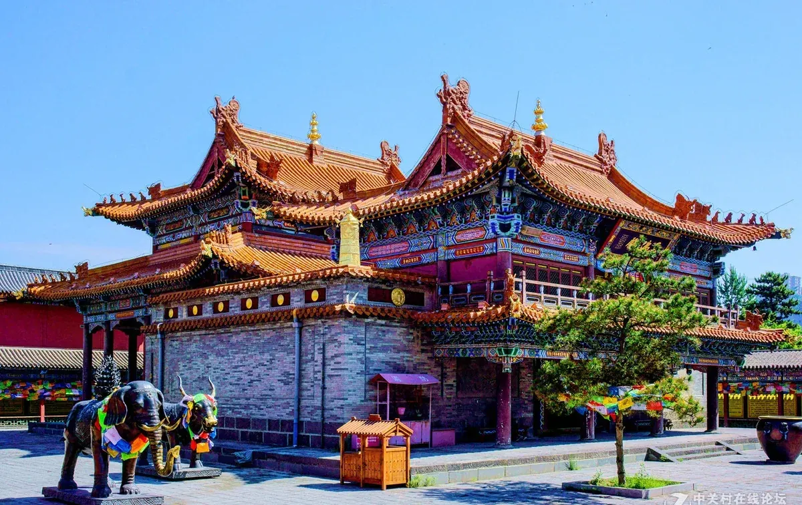

跳到主要内容
蒙益行
MENGYIXING · 智游内蒙古
首页
城市地图
十二城
生态北疆
非遗图谱
研学路线
打开地图
首页
01
城市地图
02
十二城
03
生态北疆
04
非遗图谱
05
研学路线
06
蒙益行 / 内蒙古十二盟市数字志
点击盟市进入城市志
+
100%
−

01 / 12
呼和浩特市
青城召庙，乳都新风
进入城市
草原 / 综合
当前选择
自治区首府
DRAG · ZOOM · EXPLORE
蒙益行小助手
MENGYIXING GUIDE
我是蒙益行。先点地图选一座城，或者让我直接带你去看看。
打开城市地图
十二城速览
非遗图谱
知识小测